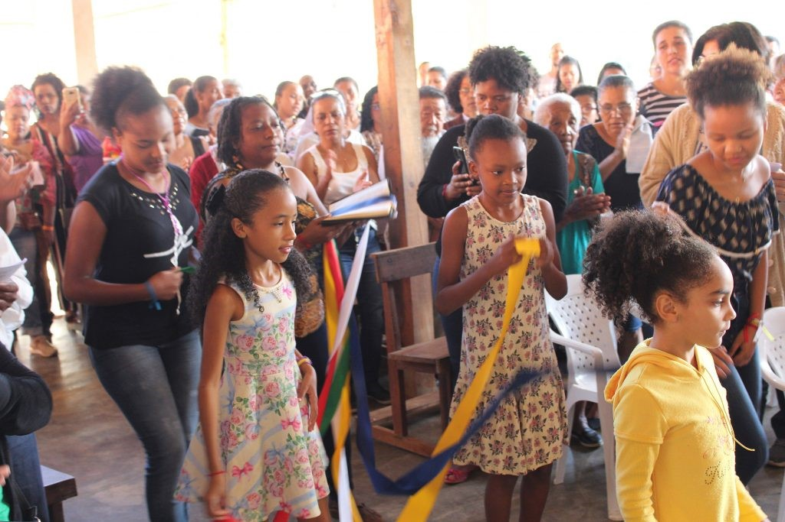
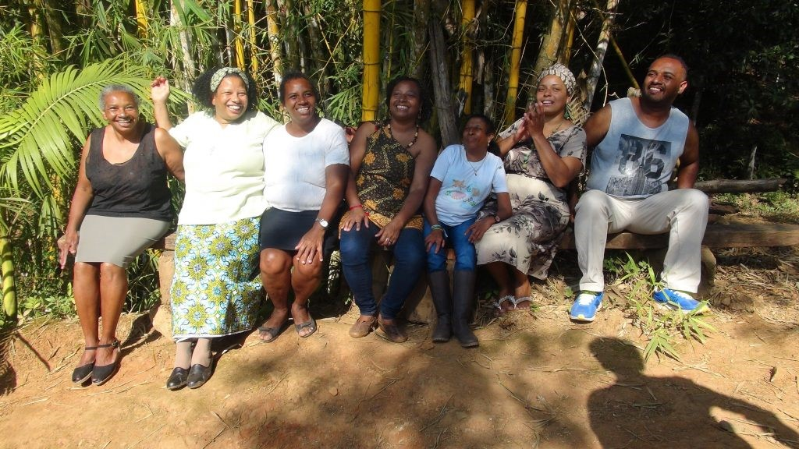
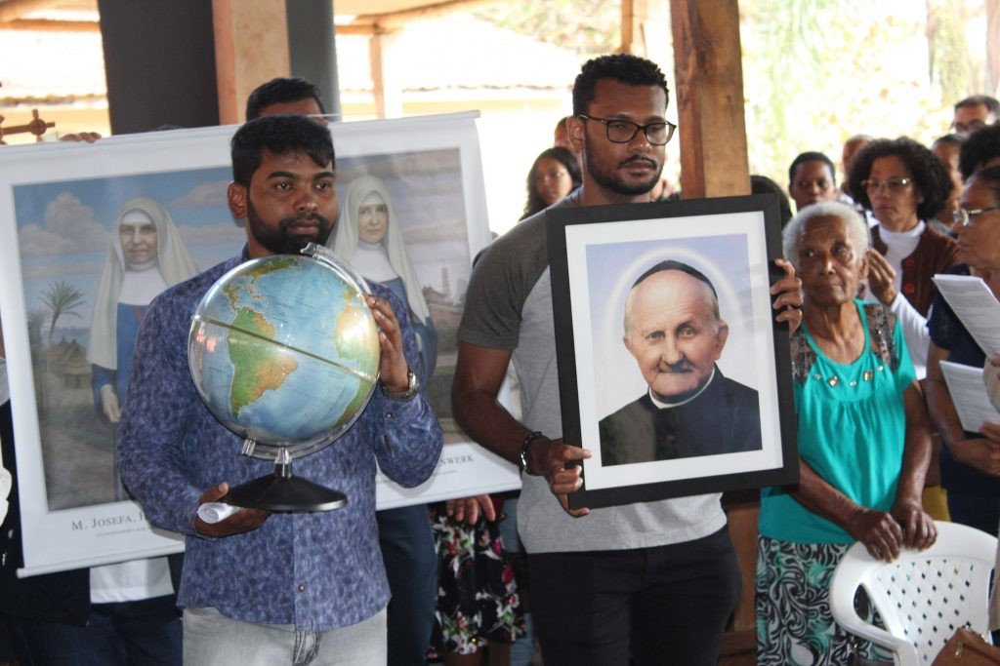

Vocações
Vocação é caminho de amor e serviço
26 de Setembro de 2020

A Igreja Católica dedica o mês de agosto às vocações, especialmente às de especial consagração, como é o caso das irmãs, padres, diáconos e leigas e leigos consagrados. Também lembra a vocação de catequistas, pais e de todas as pessoas que se dedicam com amor ao serviço do próximo.
Viver a vocação é responder ao chamado de Deus, que convida cada pessoa, com amor, respeito e carinho, a colocar seus dons a serviço dos outros, contribuindo para a vida da comunidade e o progresso da humanidade.
O chamado de Deus se manifesta dentro de cada pessoa como convite, desejo, necessidade e até mesmo como forte apelo para dar o que tem de melhor em razão de um bem maior. Por isso, provoca alegria e profunda realização. Responder ao chamado de Deus traz verdadeira felicidade ao sair de si para acolher, ajudar, amar, colaborar e servir às outras pessoas.
Ao longo dos séculos, milhares de pessoas escutaram e responderam ao chamado de Deus e ofereceram suas vidas para que crianças, jovens, enfermos, mulheres, idosos e pessoas nas mais variadas situações pudessem ter uma vida melhor, mais conscientes do amor de Deus por elas.
Deus continua chamando
Hoje, Deus continua chamando em todas as línguas, países e culturas. Inclusive entre as pessoas que vivem muito perto de nós e, quem sabe, dentro de nossa própria família. Você certamente também está sendo chamado, chamada para uma missão feita especialmente para você. Já parou para pensar?
Deus a chamou para algo mais. Então, ainda bem jovem, começou a ajudar a comunidade a se organizar, a fazer as celebrações… Depois sentiu o impacto das injustiças sobre o seu povo, na comunidade remanescente de quilombo, em Nhunguara, Município de Eldorado-SP, e viu que era necessário lutar pelo direito à terra.

Assim, seu coração foi se alargando e se abrindo ao chamado de Deus que a convidava à missão muito mais além de sua pequena comunidade. Irmã Nadir respondeu sim e entrou para a Congregação Missionária das Servas do Espírito Santo e se consagrou como irmã missionária.
Como o chamado de Deus é dinâmico, Ir. Nadir continuou atenta ao seu coração, escutou o apelo dos irmãos na África e deu mais um passo. Foi para Moçambique servir à missão. O tempo foi passando, e ela completou 25 anos de consagração religiosa e retornou à sua comunidade para celebrar.
Hoje, Ir. Nadir, de volta ao Brasil, dedica-se à missão com os migrantes em São Paulo-SP e continua a dizer sim ao chamado de Deus para amar e servir a todas as pessoas que o Senhor coloca em seu caminho.
Senhor coloca em seu caminho. O vídeo a seguir é da celebração de ação de graças pelo jubileu de 25 anos de vida consagrada de Ir. Nadir que aconteceu há um ano atrás. Vale a pena ver a expressão de alegria, tanto dela como de sua família de sangue, da família religiosa e de sua comunidade de origem. Viver a vocação, portanto, é fonte de bênçãos que se multiplicam, trazendo o Reino de Deus no agora de nosso tempo.
Publicações Anteriores
Província Stella Matutina
Rua São Benedito, 2146 - Santo Amaro - São Paulo - SP |
Tel. (11) 5547-7222


Província Spiritus Divinae Sapientiae
Rua Arnaldo Janssen, 320 - Cara-Cara - Ponta Grossa - PR |
Tel. (42) 3326 4091